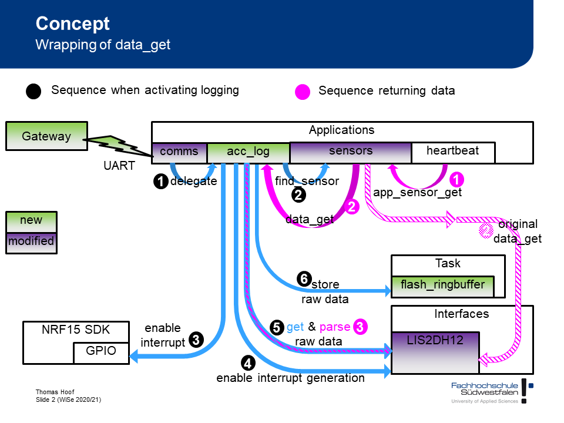

Chapter 3 Sensor
The following figure shows the high level architecture of acceleration data logging in Ruuvi Tag. All configuration is done via the gateway. It communicates with the Ruuvi Tag using the Nordic UART interface via GATT messages transported by Bluetooth Low Energy (BLE). Most logic regarding acceleration logging is implemented inside the module app_accelerometer_logging.c.

Three use cases are shown in this figure.
3.1 Initializing acceleration logging
The initialization is shown with blue arrows and numbers in black circles until #4.
To activate acceleration logging the gateway sends the message 0xFA 0xFA 0x0A 0x01. In general GATT messages are handled by the function handle_comms() inside the module app_comm.c. Messages regarding acceleration logging are delegated to the function handle_lis2dh12_comms() inside the same module. After receiving the message to activate acceleration logging the function app_enable_sensor_logging() inside the module app_accelerometer_logging.c in called (1).
The first step in activation is to check if some conditions are fulfilled. The function returns an error code if acceleration logging is already active or if it is called on a sensor which does not include an LIS2DH12. This check is done by calling find_sensor() inside of app_sensor.c (2). This function returns the sensor context. The sensor context consists of several information about the sensor. The next step associates the function on_fifo_full() from app_accelerometer_logging.c with the interrupt pin retrieved from the sensor context (3). The last step is to activate FIFO and interrupt generation inside the LIS2DH12. This is done by calling two functions from the sensor context. At last the function pointer to data_get() inside the sensor context is replaced by the pointer to the function lis2dh12_logged_data_get().
3.2 Retrieving data from FIFO
When FIFO is full inside LIS2DH12 the interrupt starts the function on_fifo_full(). This function does not directly handle the new data. It schedules a call to fifo_full_handler(). Instead of on_fifo_full() this is called in the main thread of the application. If processing is done inside a function inside an interrupt context this prevents processing of another interrupt. This should be avoided.
Inside fifo_full_handler() the FIFO from LIS2DH12 is read (5). The values are store in memory in raw format to be ready to present them to the function lis2dh12_logged_data_get() which is important for heartbeat. In parallel the raw values are compacted by removing all unused bits. This is done by the functions pack8/10/12(). A timestamp is added to the compacted values. These values are handover to the ringbuffer which writes them to flash (6).
3.3 Using the data by hearbeat
This use case is shown with magenta arrows and numbers inside magenta circles in the figure above.
The heartbeat retrieves the values from all sensors by calling the function app_sensor_get() inside the module app_sensors.c. In the original setup this function calls ri_lis2dh12_data_get() inside ruuvi_interface_lis2dh12.c. During initialization this function is replaced by lis2dh12_logged_data_get().
lis2dh12_logged_data_get() retrieves the raw acceleration values from memory. Then the values are parsed by calling ri_lis2dh12_raw_data_parse() and returned to the heartbeat.
3.4 Initialization during boot
All sensor initialization is done inside setup() from main.c. This function calls app_acc_logging_init() inside app_accelerometer_logging.c. The function checks if the ringbuffer exists. If this is true it activates acceleration logging as described earlier.
3.5 Implementation
3.5.1 app_accelerometer_logging.c
3.5.1.1 rd_status_t app_enable_sensor_logging(void)
Enables the logging of acceleration data.
| Special error codes | ||
|---|---|---|
| RD_ERROR_INVALID_STATE | If logging is already enabled. | |
| RD_ERROR_NOT_FOUND | If LIS2DH12 is not available. |
3.5.1.2 rd_status_t app_disable_sensor_logging(void)
Disables the logging of acceleration data.
| Special error codes | |
|---|---|
| RD_ERROR_INVALID_STATE | If logging is already disabled. |
| RD_ERROR_NOT_FOUND | If LIS2DH12 is not available. |
3.5.1.3 void on_fifo_full (const ri_gpio_evt_t evt)
Callback function when FIFO full interrupt occurs at LIS2DH12. This functions schedules the execution of void fifo_full_handler (void * p_event_data, uint16_t event_size). See ruuvi_interface_scheduler.h for parameters used in this function.
3.5.1.4 void fifo_full_handler (void * p_event_data, uint16_t event_size)
This function reads the FIFO and stores the data inside the ringbuffer. See ruuvi_interface_scheduler.h for parameters used in this function.
3.5.1.5 void pack8/10/12(const uint16_t sizeData, const uint8_t* const data, uint8_t* const packeddata)
These functions remove unused bits from the raw accelerometer values in 8/10/12 bit format and store them in compact form.
| Parameters | ||
|---|---|---|
| sizeData | in | Size of input data. |
| data | in | Input data. |
| packeddata | in/out | Memory for storing compacted data. |
3.5.1.6 rd_status_t lis2dh12_logged_data_get (rd_sensor_data_t * const data)
This function retrieves raw accelerometer values from memory. The values are parsed and returned inside data. It is called by app_sensor_get() inside app_sensor.c if accelerometer logging is active.
| Parameters | ||
|---|---|---|
| raw_data | in/out | Memory for storing accelerometer values. |
3.5.1.7 rd_status_t app_acc_logging_send_last_sample(const ri_comm_xfer_fp_t reply_fp)
This function is called when a request to send the last sample is received by GATT/UART. It retrieves the last sample from memory, does the compacting of the bits by calling pack8/10/12() and sends the data to the requester.
| Parameters | ||
|---|---|---|
| reply_fp | in | Function pointer to reply function. |
| Special error codes | |
|---|---|
| RD_ERROR_INVALID_STATE | If logging is not active. |
3.5.1.8 rd_status_t app_acc_logging_state(void)
This function is used to query the state of accelerometer logging. It is called when a control message is received by GATT/UART to return this state to the caller.
| Special error codes | |
|---|---|
| RD_SUCCESS | If logging is active. |
| RD_ERROR_INVALID_STATE | If logging is not active. |
3.5.1.9 rd_status_t app_acc_logging_configuration_set (rt_sensor_ctx_t* sensor, rd_sensor_configuration_t* new_config)
This function is called when a request to update the sensor configuration is received by GATT/UART. It checks every configuration parameter if it should be changed. It also checks if the value is different than actual value. If a change is detected it clears the ringbuffer, updates the configuration and stores the configuration in flash.
| Parameters | ||
|---|---|---|
| sensor | in | Sensor context of the sensor which configuration should be changed. |
| new_config | in | Structure containing the new configuration values. |
3.5.1.10 rd_status_t app_acc_logging_init(void)
Initialize acceleration logging during boot. If logging was active before reboot it will be activated. If logging was not active before reboot this function return RD_SUCCESS without activating acceleration logging.
The state if logging was active before reboot is detected by looking for the ringbuffer. If the ringbuffer exists, the logging must be active before reboot.
This function is called from setup().
3.5.1.11 rd_status_t app_acc_logging_uninit(void)
The uninitialization of acceleration logging disables the logging if it is actually active. If logging is not active this function return RD_SUCCESS without doing anything.
3.5.2 app_comms.c
3.5.2.1 void handle_comms (const ri_comm_xfer_fp_t reply_fp, const uint8_t * const raw_message, size_t data_len)
Added new switch/case which forwards messages regarding configuration and control of acceleration logging to the function handle_lis2dh12_comms().
3.5.2.2 rd_status_t handle_lis2dh12_comms (const ri_comm_xfer_fp_t reply_fp, const uint8_t * const raw_message, size_t data_len)
This function handles the GATT/UART communication needed to control the functionality of acceleration logging.
| Parameters | ||
|---|---|---|
| reply_fp | in | Function pointer to reply function. |
| raw_message | in | Message received. |
| data_len | in | Length of the received message. |
3.5.3 app_config.h
- Added macro APP_SENSOR_LOGGING to control compilation of app_accelerometer_logging.*
- If APP_SENSOR_LOGGING is not defined or is defined as 0 the functionality of logging of acceleration data is not available in the application.
3.5.4 app_heartbeat.c
3.5.4.1 void heartbeat (void * p_event, uint16_t event_size)
If acceleration logging is activated, than logging of environmental data is disabled to avoid extreme fragmentation of flash memory.
3.5.5 app_sensor.c
3.5.5.1 rt_sensor_ctx_t* app_sensor_find (const char *name)
Find sensor by its name. Works only with initialized sensors, will not return a sensor which is supported in firmware but not initialized.
This function is called by app_enable_sensor_logging() and app_disable_sensor_logging() to retrieve the sensor context.
| Parameters | ||
|---|---|---|
| name | in | Name of the sensor. |
3.5.6 main.c
3.5.6.1 void setup (void)
Added call to app_acc_logging_init() to initialize acceleration logging.
3.5.7 ruuvi_interface_lis2dh12.c
3.5.7.1 rd_status_t ri_lis2dh12_acceleration_raw_get (uint8_t * const raw_data)
This function reads raw acceleration values from the registers of LIS2DH12. It is called from the interrupt handler inside app_accelerometer_logging.c and from ri_lis2dh12_data_get().
| Parameters | ||
|---|---|---|
| raw_data | in/out | Memory for storing raw accelerometer values. |
3.5.7.2 rd_status_t ri_lis2dh12_data_get (rd_sensor_data_t * const data)
The original function ri_lis2dh12_data_get() is split into retrieving raw values from the sensor and parsing these data. Parsing is done by ri_lis2dh12_raw_data_parse().
This function is used if the acceleration logging is not active. If acceleration logging is active this function is replaced by lis2dh12_logged_data_get().
| Parameters | ||
|---|---|---|
| data | in/out | Structure for storing parsed accelerometer values. |
3.5.7.3 rd_status_t ri_lis2dh12_raw_data_parse (rd_sensor_data_t * const data, axis3bit16_t *raw_acceleration, uint8_t *raw_temperature)
This function parses raw values from the sensor and stores the values inside data. It is called from ri_lis2dh12_data_get() and from lis2dh12_logged_data_get().
| Parameters | ||
|---|---|---|
| data | in/out | Structure for storing parsed accelerometer values. |
| raw_acceleration | in | Raw acceleration values. |
| raw_temperature | in | Raw temperature value. If used from lis2dh12_logged_data_get() this parameter is NULL. |
3.5.8 ruuvi_nrf5_sdk_rtc_mcu.c
3.5.8.1 rd_status_t ri_set_rtc_millis(uint64_t millis)
Set system time by external source. Set RTC to zero.
| Parameters | ||
|---|---|---|
| millis | in | External time. |
3.6 Ringbuffer module
ruuvi.firmware.c\src\ruuvi.drivers.c\src\tasks\ruuvi_task_flash_ringbuffer.h
ruuvi.firmware.c\src\ruuvi.drivers.c\src\tasks\ruuvi_task_flash_ringbuffer.c
3.6.1 General functionality
A ringbuffer is a data structure that represents a fixed-sized queue. As the following figure shows, the current read or write position is indicated by the two attributes start and end. After every read or write, the corresponding value points to the next area.
3.6.3 Implemented functions
3.6.3.1 rd_status_t rt_flash_ringbuffer_create(const uint32_t page_id, const uint32_t record_id, const uint8_t number_of_pages, const uint16_t page_size)
This function creates a new ringbuffer, reserves the pages in flash and initializes the ringbuffer state.
| Parameters | ||
|---|---|---|
| page_id | in | PageID of the ringbuffer state |
| record_id | in | RecordID of the ringbuffer state |
| number_of_pages | in | Number of pages in the ringbuffer |
| page_size | in | Size of each page in the ringbuffer |
3.6.3.2 rd_status_t rt_flash_ringbuffer_create(const uint32_t page_id, const uint32_t record_id, const uint16_t size, const uint8_t* packeddata, rt_flash_ringbuffer_flashpage_t* flashpage)
This function collects data to store in ringbuffer. After the amount of data of an entire flashpage is reached, the write operation is called.
| Parameters | ||
|---|---|---|
| page_id | in | PageID of the ringbuffer state |
| record_id | in | RecordID of the ringbuffer state |
| size | in | Size of packeddata |
| packeddata | in | Data to collect for flashpage |
| flashpage | in/out | Flashpage struct |
3.6.3.3 rd_status_t rt_flash_ringbuffer_write(const uint32_t page_id, const uint32_t record_id, const uint16_t size, const void* data)
This function writes data to the ringbuffer.
| Parameters | ||
|---|---|---|
| page_id | in | PageID of the ringbuffer state |
| record_id | in | RecordID of the ringbuffer state |
| size | in | Size of data |
| data | in | Data to be written |
3.6.3.4 rd_status_t rt_flash_ringbuffer_read(const uint32_t page_id, const uint32_t record_id, const uint16_t size, void* data)
This functiion reads data from the ringbuffer.
| Parameters | ||
|---|---|---|
| page_id | in | PageID of the ringbuffer state |
| record_id | in | RecordID of the ringbuffer state |
| size | in | Size of data |
| data | in/out | Data to be read |
3.6.3.5 rd_status_t rt_flash_ringbuffer_clear(const uint32_t page_id, const uint32_t record_id)
This function clears the contents of the ringbuffer (start/end attribute of the ringbuffer state are set to 0).
| Parameters | ||
|---|---|---|
| page_id | in | PageID of the ringbuffer state |
| record_id | in | RecordID of the ringbuffer state |
3.6.3.6 rd_status_t rt_flash_ringbuffer_delete(const uint32_t page_id, const uint32_t record_id)
This function deletes the entire ringbuffer.
| Parameters | ||
|---|---|---|
| page_id | in | PageID of the ringbuffer state |
| record_id | in | RecordID of the ringbuffer state |
3.6.4 Exemplary use
#include "ruuvi_task_flash_ringbuffer.h"
// create ringbuffer
rd_status_t error = rt_flash_ringbuffer_create(FILE_ID, RECORD_KEY, RT_FLASH_RINGBUFFER_MAXSIZE, 4073);
// create flashpage struct
rt_flash_ringbuffer_flashpage_t flashpage;
flashpage.actual_size = 0;
flashpage.max_size = 4073;
// write data
int i=1;
while(i <= 1500) {
rt_flash_ringbuffer_collect_flashpage(FILE_ID, RECORD_KEY, sizeof(i), &i, &flashpage);
// the collect operation calls the write operation when the data size for a flashpage is reached
i++;
}
// read data from flash
rt_flash_ringbuffer_flashpage_t flashpage_read;
error = rt_flash_ringbuffer_read(FILE_ID, RECORD_KEY, sizeof(flashpage_read), &flashpage_read);